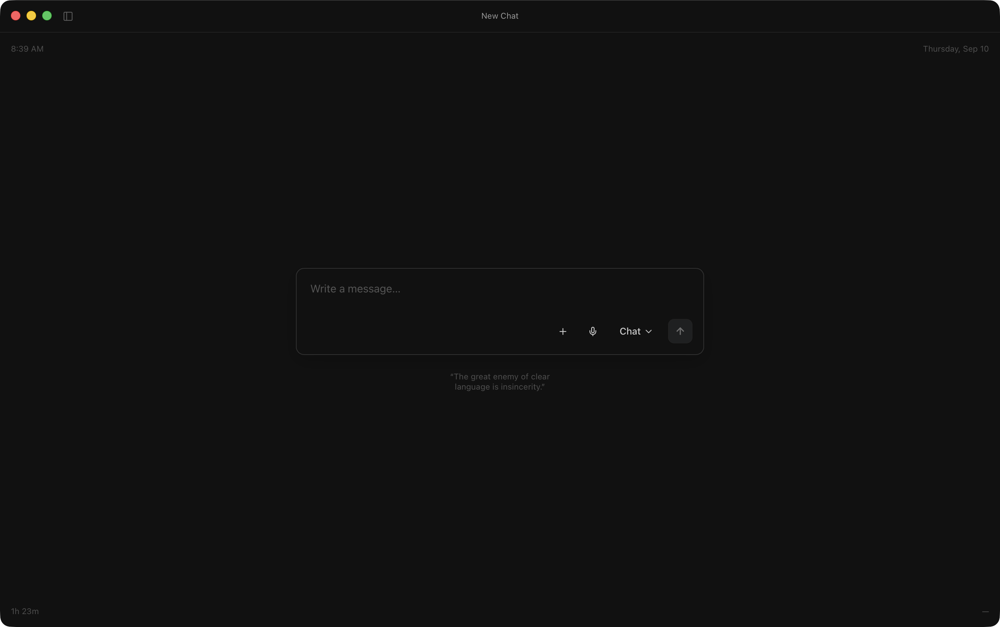
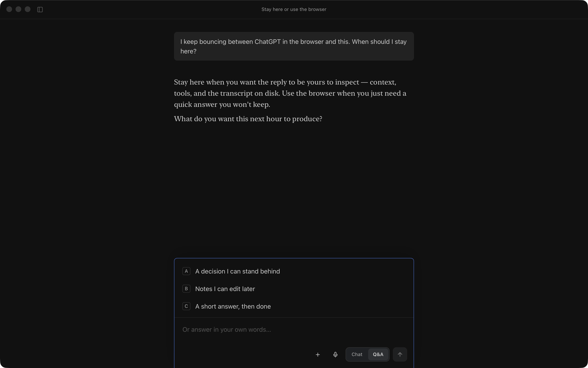

The app I actually use instead of a chat tab. Dictation, chat without the persona, notes, and tasks — a local thinking partner, not an answer engine.
Commercial tools optimize for a mainstream audience and lock-in. This one is personal: data on disk I can leave with, context I can inspect, voice when typing is the wrong interface.


On the next page, get the file ending in .dmg.
Source on GitHub
macOS 12 Monterey or later · Apple silicon · Microphone access for dictation · Tauri (Rust, React), Swift UI, OpenAI, Apple Speech, Cloudflare R2, IBM Plex Sans & Mono